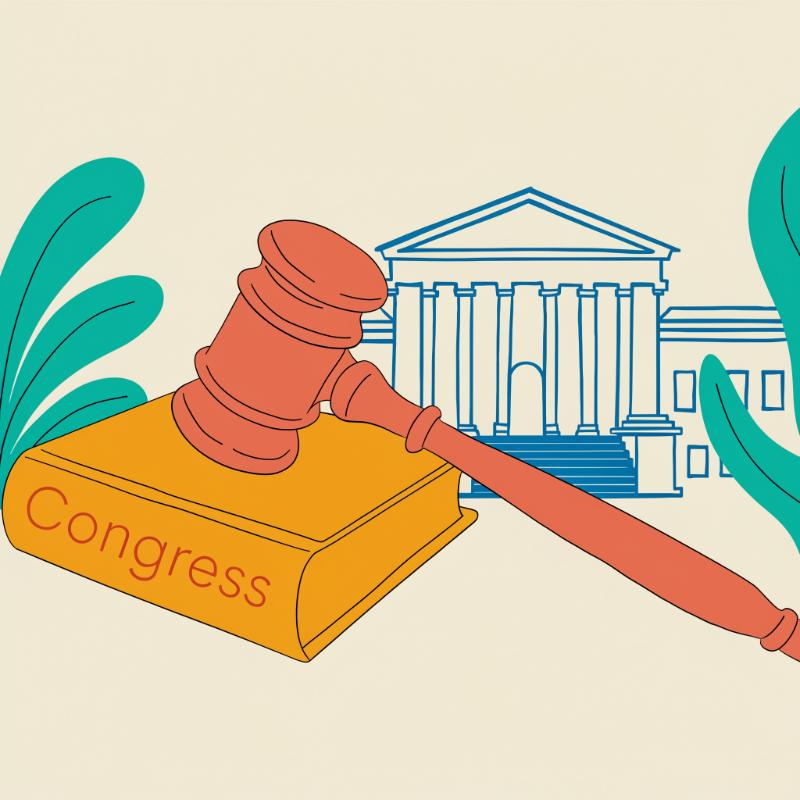

![NTK]()

Boulder County sued Exxon and Suncor in 2018, and Monday the fight finally reached the marble room. The county says the companies knew for decades that burning their product would worsen droughts and wildfires, and lied to the public about it anyway. (Washington Post) Boulder wants Exxon and Canada's Suncor, which runs Colorado's only major refinery, to help cover the bill for the floods and heat waves county officials blame on their emissions. (Washington Post) Outside the courthouse, protesters chanted "They knew! They lied!" while inside, eight justices, Samuel Alito having recused himself over oil stock he owns in companies not even party to the case, spent nearly two hours failing to agree on anything. (Reuters)
The argument split less along the usual lines than oil company lawyers hoped. Kannon Shanmugam, representing Suncor and Exxon, told the justices the case was "an unprecedented effort to use state law to regulate global conduct" and warned that a loss could expose any gas station customer to liability for downstream emissions. (Washington Free Beacon) Justice Elena Kagan was not persuaded, comparing the suit to the state lawsuits that brought down Big Tobacco and the opioid makers and asking Shanmugam directly where a legal line against states regulating air and water even comes from. (Washington Post) Chief Justice John Roberts pushed the same direction, noting the court has let state courts handle out-of-state conduct with in-state harm before and asking what makes this different. (Fox News)
Brett Kavanaugh broke from his fellow conservatives to warn the other direction entirely.
It is going to bankrupt, if there are enough of these lawsuits, bankrupt these various defendants and certainly other defendants out there. Anyone is a potential defendant for a suit like this. Any manufacturer, any business.
Justice Brett KavanaughKavanaugh and Amy Coney Barrett both leaned on four prior rulings they called a "wall of precedent" making air and water pollution federal, not state, territory. (Bloomberg) Justice Ketanji Brown Jackson offered the industry a quieter exit, suggesting the case might simply be too early for the court to touch at all and better sent back to Colorado to play out. (Washington Post)
That uncertainty matters well past Boulder's county line. Dozens of similar suits from San Francisco to Massachusetts to Hawaii are waiting on this ruling as the template for whether climate damage can be billed to the companies that caused it. (Washington Post) The Trump Justice Department argued alongside the oil companies that Boulder's theory "eviscerates" the limits on state authority, while the administration simultaneously rolls back the federal climate rules it says only Washington has the power to set. (USA Today)
With a 4-4 split live on the table and Alito's seat not getting any younger, the next ruling matters twice over.
A tie at the Supreme Court sends Boulder back to Colorado state court within months, and that is the outcome Exxon's lawyers fear most. Roberts asked the sharpest questions of the oil companies' side, and if he lands where his questions pointed, an eight-justice court splits 4-4. (Washington Post) A tie affirms the Colorado Supreme Court's decision without setting national precedent, which means Boulder's case proceeds to discovery in front of a Colorado judge, not a federal one, likely within the next several months. For San Francisco, Massachusetts and Hawaii, a tie is the green light they have been waiting years for: their own suits can cite Boulder as the live model and push toward trial dates of their own. Suncor and Exxon lose the thing they actually came to Washington to get, which was a single national rule that kills every climate suit at once. A split verdict leaves them fighting the same war in a dozen courthouses instead of one, with Kavanaugh's bankruptcy warning hanging over every filing.
That outcome turns the Alito seat from a retirement question into a math problem. Alito, 76, already told CBS he weighed stepping down this year, and a 4-4 tie on a case this size is the kind of result that makes a justice reconsider staying put. (NBC News) If he retires before the midterms, Trump gets a clean confirmation vote through a Republican Senate and a fourth seat to his name. If he waits past Nov. 3 and Democrats take the Senate, Schumer and Blumenthal have already said on the record they intend to sit on any nominee for two years, the same blockade McConnell ran on Merrick Garland in 2016. (Mediaite) Alito's own timeline, not the Court's calendar, is now the variable both parties are watching.
The most likely near-term step is procedural, not substantive: the Court will almost certainly rule on the "ripeness" question Jackson raised before it touches the merits at all. A finding that the case is premature lets Roberts avoid writing a landmark opinion in an 8-justice term and kicks the real fight to Colorado's courts first, where Boulder's lawyers have already shown they can win. Either way, the companies that spent Monday arguing they'd be exposed to "any manufacturer, any business" liability leave this term with less certainty than they walked in with, and that uncertainty is itself a cost Wall Street will start pricing into Exxon and Suncor within the next two weeks.
Walk through the door a 4-4 split opens and two more rooms appear, neither of which existed as live options before Monday.
A premature tie plus an Alito retirement this winter hands Trump a nominee fight with an actual deadline attached. The ripeness off-ramp and the retirement math are not separate threads; they are the same lever. If the Court ducks the merits on ripeness grounds, as Jackson's questioning suggested it might, Alito gets to retire into a Boulder case that is technically unresolved rather than one he lost outright, a cleaner exit than stepping down mid-split. That timing only works before Nov. 3. A Republican Senate confirms a replacement in weeks; Schumer and Blumenthal have already put a two-year blockade on the table for anything after. The adjacent possible here is narrow and specific: an Alito retirement announced between the ripeness ruling and Election Day, timed to a legal off-ramp that did not exist until this week's argument created it.
That first door, a ripeness dodge plus a timed retirement, is what makes the second one visible. A ninth justice confirmed before January changes the posture of every pending climate suit at once, not just Boulder's. San Francisco, Massachusetts and Hawaii are not waiting on Boulder's outcome in isolation; they are waiting on what a full nine-justice Court looks like when one of these cases eventually does reach the merits. A Trump nominee seated fast, before Democrats could conceivably flip the Senate, restores the 5-3 or 6-3 conservative majority that Alito's recusal and Kavanaugh's bankruptcy warning had temporarily scrambled. The companies lose the one procedural gift the recusal handed them, a genuinely unpredictable eight-justice panel, and get back something closer to the court they expected when they filed the appeal. Boulder's lawyers, who found unexpected sympathy from Roberts and Kagan on an eight-member bench, would be arguing their next appeal to a court tilted further away from them than the one that heard oral arguments this week.
The generative door sits inside the same mess. A Court that cannot agree on Boulder is also a Court with no incentive to write a sweeping national rule, which is the opening Congress keeps declining to use. Kavanaugh's own argument, that Congress "presumably" settled this when it passed the Clean Air Act amendments, cuts both ways: if the justices keep punting on ripeness and splitting on the merits, the pressure to write an actual statute addressing climate liability lands back on the branch built to write statutes, not the one built to referee them. Nothing in Monday's argument suggests Congress is about to act. But a stalemated Court, an unresolved Alito seat and dozens of cities watching Boulder for a signal that never fully arrives is exactly the kind of mess that makes a legislative fix look less radical than it did a year ago, to whichever Congress shows up in January.
The framing problem isn't what the justices said Monday. It's what both sides are telling their own supporters happened.
Shanmugam told the Court that Boulder's lawsuit threatens to make "any manufacturer, any business" liable for climate damage, and conservative media ran with it as settled fact rather than a lawyer's worst-case hypothetical. The Washington Free Beacon's write-up leaned on the line that the case "egregiously exceeds constitutional limits," treating the Trump administration's brief as a neutral description of the stakes rather than what it is: the losing side of a 2011 Supreme Court precedent trying to avoid losing the same way twice. (Washington Free Beacon) The gas-station-customer scenario Shanmugam floated is a slippery-slope argument, the kind every industry facing liability has made since tobacco companies warned that suing cigarette makers would bankrupt corner stores. It answers a real fear, that a ruling for Boulder could metastasize into lawsuits nobody can predict or price, which is exactly why Exxon's lawyers chose that image over a narrower one. The people who benefit from that framing taking hold are the companies themselves: a public primed to believe the ruling threatens every business in America is a public that will not notice when the actual question before the Court is much narrower, whether Colorado's courts can hear a case about Colorado wildfires.
The mirror image runs through the protesters chanting "They knew, they lied" outside the courthouse. That claim, that internal company documents prove decades of deliberate deception, is the premise the entire lawsuit rests on, and it may well hold up. But Monday's hearing did not resolve it. The justices spent two hours arguing about jurisdiction, not about what Exxon knew in 1988 or what it told the public afterward. Treating the chant as a finding rather than an allegation serves the activists and the municipal lawyers building the next forty lawsuits on Boulder's model, giving them a verdict to point to before any court has reached the merits. Both distortions share the same mechanism: each side describes a procedural fight over which courthouse hears the case as though it already answered the only question its audience actually cares about, who pays.